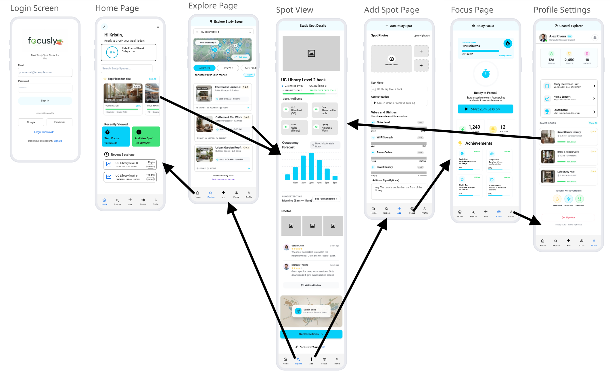

Problem
University students struggle to find quiet and suitable study spaces. Libraries and public areas are often overcrowded or unpredictable, making focused study difficult.
Research
To better understand the problem, we conducted user research through interviews and observations with 8 university students.
- 6/8 struggle to find study spaces daily
- 8/8 want environments that match their preferences
- 6/8 feel frustrated with overcrowding
- 4/8 struggle to find group study spaces
Key insights:
- Need for real-time availability across all public study areas
- Interest in unused classrooms as study spaces
Solution
Focusly is a mobile app that helps students find, view, and reserve study spaces. It includes real-time availability and gamification to improve engagement.
Key Features
- Search & Filters: Find study spaces by location and environment
- Live Availability: See how busy a space is in real time
- Reservations: Book study spaces in advance
- Gamification: Earn points and badges for study sessions
- Add a Spot: Users can contribute new study locations
Design Decisions
- Gamification to increase motivation
- Map-based navigation for faster discovery
- Real-time busyness indicators
- Simple UI to reduce cognitive load
- Reservation system to guarantee space access
Prototype
The prototype was created in Miro, focusing on navigation, clarity, and core user flows such as searching and starting a focus session.

Prototype Testing
Tested with university students to evaluate usability and navigation.
Findings
- Interface was intuitive and easy to use
- Navigation supported user tasks well
- Some confusion switching between views
- Map button was not clearly visible
Outcome
Improvements were identified to improve navigation clarity and user flow. Overall, the concept successfully met user needs.
My Role & Reflection
Role
This project was a collaborative group effort, where all team members contributed across different areas. My main contributions included developing wireframes, early-stage prototyping, and helping structure the overall user experience. I also supported the presentation of the concept and key design decisions.
Reflection
What I learned:
- User research is essential in shaping design decisions
- Designing based on assumptions can lead to poor user experience
- Feedback from real users helps identify usability issues early
Skills developed:
- Translating research insights into design features
- Understanding user needs and behaviour
- Evaluating usability through prototype testing
- Iterating designs based on feedback
What I would improve:
- Refine navigation flow based on testing feedback
- Conduct additional usability testing with a larger and more diverse user group
- Further improve clarity in key interactions such as map navigation and study space selection